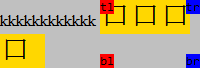
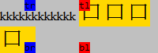
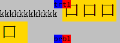
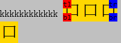
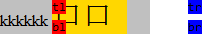
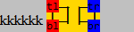
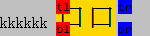

在 W3C CSS 2.1 规范中定义包含块的定义4中，有如下描述：如果元素是绝对定位元素( position:absolute )，包含块是最近的祖先元素(祖先元素的定位方式是 absolute 、 refaltive 或 fixed )，如果祖先元素是行内级元素，包含块依靠祖先的 'dircetion' 特性，如果 direction:ltr ，则包含块的 left 和 top 是祖先元素生成的第一个框的 left 和 top ，包含块的 bottom 和 right 是祖先元素生成的最后一个框的 bottom 和 right 。也就说是不管祖先元素的边界形状如何，计算后的包含块绝对是一个矩形，并且这个矩形的上下左右边界值都有可能是负值。
关于包含块的详细描述，参见 css 2.1 10.1 包含块定义 。
包含块是行内元素，行内元素的绝对定位子元素位置，在各浏览器有差异。
包含块是行内元素，行内元素的绝对定位子元素依据行内元素使用 left top right bottom 定位时，各浏览器对包含块的位置计算不同，导致页面布局出现差异。
| 所有浏览器 |
|---|
包含块是行内元素，且包含块的宽度是负值(行内元素的第一个框的起始位置位于最后一个框结束位置的右侧，这时包含块为负值)。
分析以下代码：
<!DOCTYPE html> <html> <head> <meta http-equiv="Content-Type" content="text/html;
charset=UTF-8" /> </head> <style> </style> <body> <div id="C"
style="width:200px;background:silver;"> kkkkkkkkkkkk <span id="A"
style="position:relative;background:gold;font-family:consolas;font-size:30px;"> 口口口口 <div
style="top:0;left:0;position:absolute; background: red; font-size:12px;">tl</div> <div
style="top:0;right:0;position:absolute; background: blue; font-size:12px;">tr</div> <div
style="bottom:0;left:0;position:absolute; background: red; font-size:12px;">bl</div> <div
style="bottom:0;right:0;position:absolute; background: blue; font-size:12px;">br</div>
</span> </div> </body> </html>
上面代码中设置 DIV 宽度、字母和汉字是为了营造行内元素包含块 ( A ) 宽度是负值的情况，这段代码在不同浏览器中运行结果如下：
| IE6 IE7(Q) IE8(Q) | IE7(S) |
|---|---|
|  |  |
| IE8(S) Chrome Safari Opera | Firefox |
|  |  |
可见，根据上左、上右、下左、下右四个方向的测试情况可以推测：
行内元素包含块没有折行，这时行内元素包含块的宽度是正值。
分析以下代码：
<!DOCTYPE html> <html> <head> <meta http-equiv="Content-Type" content="text/html;
charset=UTF-8" /> </head> <style> </style> <body> <div
style="width:150px;background:silver;"> kkkkkk <span
style="position:relative;background:gold;font-family:consolas;font-size:30px;"> 口口 <div
style="top:0;left:0;position:absolute; background: red; font-size:12px;">tl</div> <div
style="top:0;right:0;position:absolute; background: blue; font-size:12px;">tr</div> <div
style="bottom:0;left:0;position:absolute; background: red; font-size:12px;">bl</div> <div
style="bottom:0;right:0;position:absolute; background: blue; font-size:12px;">br</div>
</span> </div> </body> </html>
这段代码在不同浏览器中运行结果如下：
| IE6(Q)(S) IE7(Q) IE8(Q) | IE7(S) IE8(S) Chrome Safari Opera | Firefox |
|---|---|---|
|  |  |  |
可见，由于行内元素的包含块是正值，没有折行，所以行内元素生成的第一个框和最后一个框重合，此时仅IE7(S) IE8(S) Chrome Safari Opera 是符合规范。
各浏览器对于行内元素的包含块范围计算有误，因此建议，应尽可能避免将行内元素边界作为计算包含块边界的情况出现。
| 操作系统版本: | Windows 7 Ultimate build 7600 |
|---|---|
| 浏览器版本: |
IE6
IE7 IE8 Firefox 3.6.9 Chrome 7.0.517.5 dev Safari 5.0.2 Opera 10.62 |
| 测试页面: |
inlinecontainer_neg.html
inlinecontainer_pos.html |
| 本文更新时间: | 2010-09-15 |
position absolute containing block inline edges top bottom left right 包含块 边界 行内元素 负值